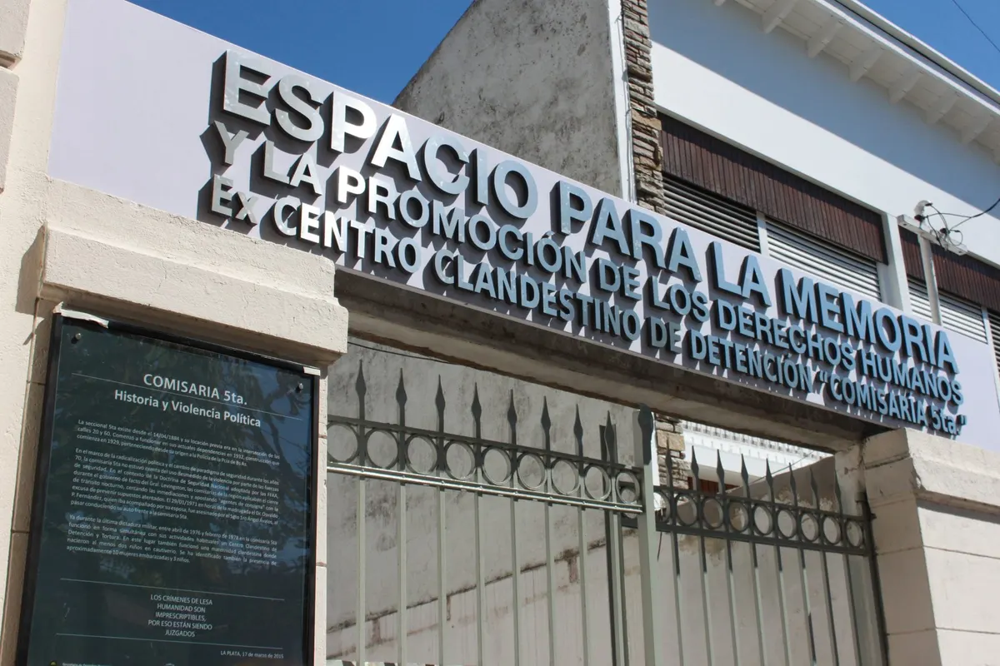

Buscan declarar de interés legislativo el ciclo teatral de la ex Comisaría 5° de La Plata
Juan Malpeli busca que Diputados reconozca el valor del ciclo pedagógico "Teatro y Memoria", que se desarrolla en la ex comisaría 5ta de La Plata.

El legislador bonaerense de Fuerza Patria, Juan Malpeli, presentó un proyecto para que la Cámara de Diputados brinde un reconocimiento al ciclo pedagógico y cultural “Teatro y Memoria”, una propuesta gratuita dirigida a estudiantes primarios y secundarios que se desarrolla en el Espacio para la Memoria ex Comisaría 5ta de La Plata, junto con la Defensoría del Pueblo bonaerense y la Comedia de la Provincia de Buenos Aires
De acuerdo a lo expuesto por el legislador, la iniciativa, que tiene lugar de marzo a noviembre de 2026, combina representaciones teatrales con charlas posteriores a cargo de trabajadores del Espacio para la Memoria, donde se abordan el funcionamiento del ex centro clandestino de detención, el terrorismo de Estado y la búsqueda de Abuelas de Plaza de Mayo.
“El lenguaje de la ficción permite acercarse a situaciones históricas a través de personajes y conflictos concretos. A la vez, las cartas reales incorporadas en una de las obras y la realización de las funciones en un sitio de memoria ofrecen puntos de contacto con documentos y lugares de esa historia, una combinación que favorece la reflexión que puede continuar en el aula”, expuso Malpeli en los fundamentos del escrito.
En ese sentido, el legislador bonaerense señala que, por el aporte que realiza a la transmisión de la memoria, a la defensa de la democracia y a la promoción de los derechos humanos a través de una experiencia artística y pedagógica situada, corresponde que la Legislatura reconozca el valor del ciclo “Teatro y Memoria”, que tiene lugar en la ex comisaría situada a pocos metros del Parque Castelli de La Plata.
El ciclo Teatro y Memoria comprende tres producciones teatrales adaptadas a diferentes etapas educativas. Para el nivel primario se presenta “Un millón y medio de ideas”, una obra que aborda la quema de libros del Centro Editor de América Latina en Avellaneda durante la última dictadura cívico-militar, a través de la historia de Julia, una niña que busca libros infantiles prohibidos por pedido de su maestra.
Según los creadores de la actividad escolar, la propuesta busca acercar a los estudiantes de la escuela primaria a la censura y la persecución cultural durante el terrorismo de Estado, además de destacar el valor de los libros y de quienes contribuyeron a preservarlos. En su texto, Malpeli recuerda que la represión también operó sobre la producción cultural del país, mediante la censura, la persecución y el silenciamiento de distintas expresiones artísticas.
Para estudiantes de nivel secundario y superior, el ciclo incluye “Celina y las cartas”, una obra que reconstruye la historia de Celina Lacay, detenida por razones políticas en la cárcel de Villa Devoto durante la dictadura. A partir de una investigación basada en cartas conservadas por su familia y por el Archivo Provincial de la Memoria, la dramaturgia recupera los vínculos que Celina mantuvo con sus hijos, su esposo, su madre, sus hermanas y sus compañeras de celda, así como las relaciones de afecto y compañerismo que construyó durante el encierro.
La tercera propuesta es “Pequeña trinchera de palabras”, creada en el marco del cincuentenario del último golpe de Estado que vivió Argentina. La ficción transcurre el 24 de marzo de 1977 en una radio de La Plata, donde dos periodistas deben decidir cómo actuar frente a la censura y el temor, mientras circula la Carta Abierta a las Juntas Militares de Rodolfo Walsh.
A través de ese conflicto, la obra aborda la represión, las desapariciones, el exilio y la apropiación de niñas y niños, además de las consecuencias sociales del proyecto económico de la dictadura. La propuesta también permite reflexionar sobre el trabajo de la Agencia de Noticias Clandestina (ANCLA), impulsada por Walsh, y sobre la importancia de hacer circular información en un contexto marcado por la censura.
En los fundamentos, Malpeli destaca que el teatro permite abordar hechos históricos mediante personajes y conflictos concretos, mientras que el intercambio posterior a cada función habilita preguntas y reflexiones que pueden continuar en las aulas de cada uno de los grupos que participa de las exposiciones. Por último, el diputado sostiene que la adecuación de las producciones a cada nivel educativo permite abordar temas complejos de manera gradual y promover la participación de las nuevas generaciones en la construcción de la memoria colectiva.